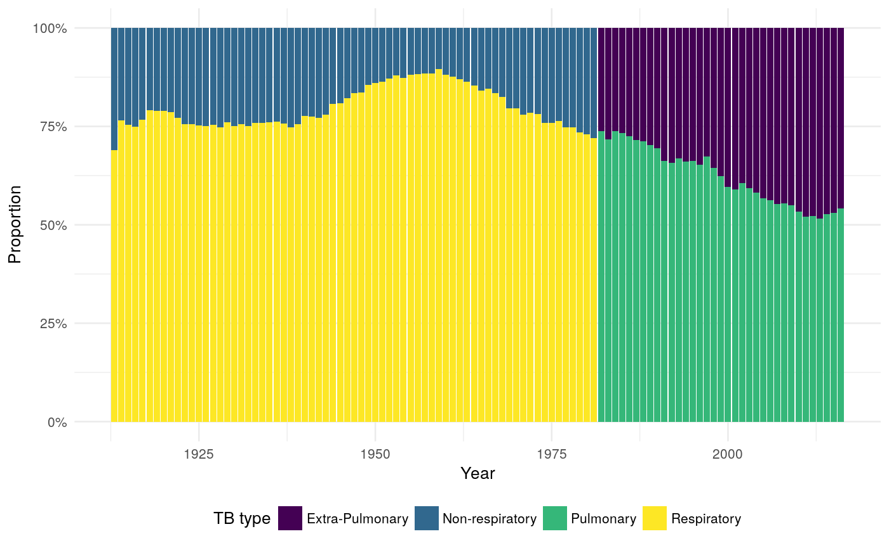

R/plot_historic_prop_pul_tb.R
plot_historic_prop_pul_tb.RdExported from tbinenglanddataclean.
plot_historic_prop_pul_tb(df = tb_not_ew, plot_theme = NULL, colour_scale = NULL, return = FALSE)
| df | A dataframe, (defaults to using |
|---|---|
| plot_theme | The ggplot2 theme to use, defaults to |
| colour_scale | The colour scale to plot with, defaults to |
| return | A logical indiciting if the plot should be printed or returned (defaults to |
A ggplot2 plot of TB notifications over time, with a secondary zoomed plot from a specified date.
plot_historic_prop_pul_tb()#> Warning: Removed 208 rows containing missing values (position_stack).